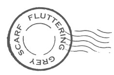

Flutteringreyscarf.it
Design B&B
In Puglia, il fascino di un B&B di design con tanto di Galleria
In Puglia, the charm of a design B&B complete with its own Gallery.
Scheda predisposta per logo, titolo, fonte e collegamento alla recensione.
Card prepared for logo, title, source and review link.